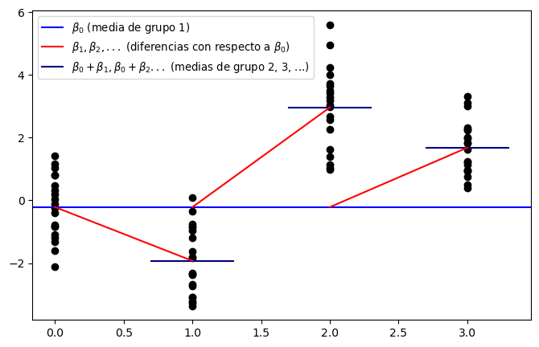
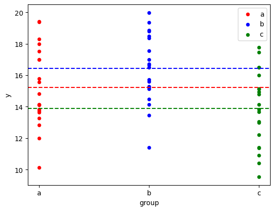
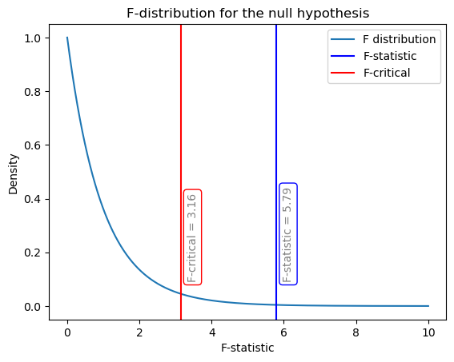
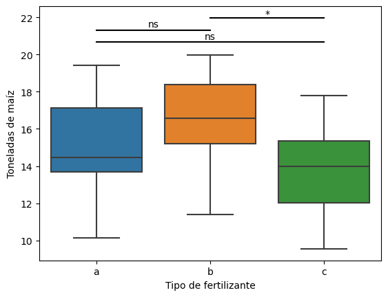

import numpy as np
import pandas as pd
import statsmodels.formula.api as smf
import scipy.stats as stats
import matplotlib.pyplot as plt
# graficar anova de una vía
def one_way_anova_plot(figsize=(10, 8)):
# Construct data as a pd.DataFrame
a = np.random.normal(0, 1, 20)
b = np.random.normal(-2, 1, 20)
c = np.random.normal(3, 1, 20)
d = np.random.normal(1.5, 1, 20)
df = pd.DataFrame()
df["y"] = np.concatenate([a, b, c, d])
df["group_2"] = np.concatenate(
[np.zeros_like(b)] + [np.ones_like(b)] + 2 * [np.zeros_like(b)]
)
df["group_3"] = np.concatenate(
2 * [np.zeros_like(c)] + [np.ones_like(c)] + [np.zeros_like(c)]
)
df["group_4"] = np.concatenate(3 * [np.zeros_like(d)] + [np.ones_like(d)])
# ANOVA equivalent linear model
res = smf.ols("y ~ 1 + group_2 + group_3 + group_4", df).fit()
beta0, beta1, beta2, beta3 = res.params
# Plot
fig, ax = plt.subplots(figsize=figsize)
ax.scatter(0 * np.ones_like(a), a, color="k")
ax.scatter(1 * np.ones_like(b), b, color="k")
ax.scatter(2 * np.ones_like(c), c, color="k")
ax.scatter(3 * np.ones_like(d), d, color="k")
# Group 1 (baseline)
ax.axhline(beta0, color="b", label=r"$\beta_0$ (media de grupo 1)")
# Group 2
ax.plot([0.7, 1.3], 2 * [beta0 + beta1], color="navy")
ax.plot(
[0, 1],
[beta0, beta0 + beta1],
color="r",
label=r"$\beta_1, \beta_2, ...$ (diferencias con respecto a $\beta_0$)",
)
# Group 3
ax.plot(
[1.7, 2.3],
2 * [beta0 + beta2],
color="navy",
label=r"$\beta_0+\beta_1, \beta_0+\beta_2 ...$ (medias de grupo 2, 3, ...)",
)
ax.plot([1, 2], [beta0, beta0 + beta2], color="r")
# Group 4
ax.plot([2.7, 3.3], 2 * [beta0 + beta3], color="navy")
ax.plot([2, 3], [beta0, beta0 + beta3], color="r")
ax.legend(fontsize=9.5, loc="upper left")
return fig, ax4. Técnicas multivariadas
4.1. ANOVA
Autor: Emmanuel Alcalá
Google Scholar
Regresar a la página del curso
El análisis de ANOVA (Análisis de Varianza) es una técnica estadística que permite comparar la diferencia entre dos o más grupos de una variable cuantitativa, es decir, permite comparar las medias entre categorías. En este caso, la variable cuantitativa es la variable dependiente y las variables categóricas son las variables independientes.
En los experimentos, la variable dependiente es la variable que se mide y las variables independientes son las variables que se manipulan. Por ejemplo, en un experimento en donde queremos medir la altura de las plantas de maíz, la variable dependiente es la altura de las plantas y las variables independientes son el tipo de suelo, la cantidad de agua, la cantidad de fertilizante, etc.
Las variables independientes también se conocen como factores. En el ejemplo anterior, el tipo de suelo, la cantidad de agua y la cantidad de fertilizante son factores. El nivel de intensidad de un factor se denomina nivel del factor. Por ejemplo, el tipo de suelo puede ser un factor con tres niveles: suelo arenoso, suelo arcilloso y suelo limoso. La cantidad de agua puede ser un factor con tres niveles: 0, 50 y 100 litros. La cantidad de fertilizante puede ser un factor con tres niveles: 0, 50 y 100 litros. Notar que los niveles de los factores son discretos o categóricos.
Procedimiento del análisis de varianza
El procedimiento de ANOVA trata de analizar la variación en un conjunto de respuestas y asignar esta variación a los diferentes factores. El procedimiento de ANOVA se puede resumir en los siguientes pasos:
Paso 1: Se establece la hipótesis nula y la hipótesis alternativa. La hipótesis nula es que no hay diferencia entre los grupos. La hipótesis alternativa es que hay diferencia entre los grupos. Matemáticamente, se expresa así:
\[H_0: \mu_1 = \mu_2 = \cdots = \mu_k\] \[H_a: \text{al menos una } \mu_i \neq \mu_j \text{ para } i\neq j\]
Donde \(\mu_i\) es la media de la respuesta en el grupo \(i\) y \(k\) es el número de factores.
Paso 2: Se calcula la suma de cuadrados total (SST).
\[SST = \sum_{i=1}^k\sum_{j=1}^{n_i}=(y_{ij} - \bar{y})^2\]
En donde \(k\) es el número de factores, \(n_i\) es el número de observaciones en el grupo \(i\), \(\bar{y}\) es la media de las respuestas y \(y_{ij}\) es la respuesta en la observación \(j\) del grupo \(i\).
Se llama suma de cuadrados total (SST) a la suma de cuadrados entre los grupos (SSG) y la suma de cuadrados dentro de los grupos (SSW). Matemáticamente, se expresa así:
\[SST = SSG + SSW\]
En ocasiones, el SSW se denomina suma de cuadrados residual (SSR) o suma de cuadrados de error (SSE). Básicamente, captura la variación que no se explica por los factores (que sería SSG).
Paso 3: Se calcula la suma de cuadrados entre los grupos (SSG) y la suma de cuadrados dentro de los grupos (SSW). Se calculan con las fórmulas siguientes:
\[SSG = \sum_{i=1}^{k} n_i (\bar{y}_i - \bar{y})^2\]
\[SSW = \sum_{i=1}^{k} \sum_{j=1}^{n_i} (y_{ij} - \bar{y}_i)^2\]
Donde \(k\) es el número de factores, \(n_i\) es el número de observaciones en el grupo \(i\), \(\bar{y}_i\) es la media de las respuestas en el grupo \(i\) y \(y_{ij}\) es la respuesta en la observación \(j\) del grupo \(i\).
La SSG será grande si la diferencia \(\bar{y}_i - \bar{y}\) es grande. Cuanto más grande sea SSG, mayor será el porcentaje de variación que se explica por los factores, por lo que tenemos más evidencia en contra de \(H_0\). La SSW será grande si la diferencia \(y_{ij} - \bar{y}_i\) es grande. Cuanto más grande sea SSW, menor será el porcentaje de variación que se explica por los factores.
Paso 4: Se calcula la varianza entre los grupos (MSG) y la varianza dentro de los grupos (MSW). Sus fórmulas son: \[MSG = \frac{SSG}{k-1}\] \[MSW = \frac{SSW}{N-k}\] Donde \(k\) es el número de factores y \(N\) es el número de observaciones.
Paso 5: Se calcula el estadístico F. El valor F es una medida de la variación entre los grupos dividida por la variación dentro de los grupos. Considera que la variación entre los grupos es la variación que se explica por los factores y la variación dentro de los grupos es la variación que no se explica por los factores. Matemáticamente, se expresa como:
\[F = \frac{MSG}{MSW}\]
Si la variación explicada por los factores es grande, el valor F será grande y \(F>>1\). Si la variación explicada por los factores es pequeña, el valor F será pequeño y \(F<<1\). Si la variación explicada por los factores es igual a la variación no explicada por los factores, el valor F será igual a 1. El valor de F nos indica cuánta evidencia tenemos en contra de \(H_0\).
Nota:
El valor F proviene de una distribución F con \(k-1\) y \(n-k\) grados de libertad. Se usa la distribución F porque la varianza entre los grupos y la varianza dentro de los grupos tienen distribuciones \(\chi^2\) con \(k-1\) y \(n-k\) grados de libertad, respectivamente. La distribución F se define como la razón de dos variables aleatorias con distribución \(\chi^2\).
Paso 6: Se calcula el p-valor. El p-valor es la probabilidad de obtener un valor de F mayor o igual al valor de F observado, suponiendo que \(H_0\) es verdadera. Si el p-valor es menor que el nivel de significancia, se rechaza \(H_0\) y se acepta \(H_a\). Si el p-valor es mayor que el nivel de significancia, no se rechaza \(H_0\).
Paso 7: Se toma una decisión. Si el p-valor es menor que el nivel de significancia, se rechaza la hipótesis nula y se acepta la hipótesis alternativa. Si el p-valor es mayor que el nivel de significancia, no se rechaza la hipótesis nula.
one_way_anova_plot(figsize=(8, 5))(<Figure size 800x500 with 1 Axes>, <AxesSubplot:>)
Ejemplo numérico
Supongamos que se quiere estudiar el efecto del tipo de fertilizante en la producción de maíz. Se toman muestras de maíz en tres tipos de fertilizantes: A, B y C. Para cada tipo de fertilizante se tomaron 20 muestras. En total, nuestra N total es 60.
# set the seed
np.random.seed(123)
# number of points for each group
num_points = 20
# simulate data from 3 groups. The first argument is the mean, the second is the standard deviation
a = np.random.normal(15, 2, num_points)
b = np.random.normal(17, 2, num_points)
c = np.random.normal(13, 2, num_points)
df = pd.DataFrame()
df["y"] = np.concatenate([a, b, c])
# assign group names
df["group"] = list("".join([num_points * char for char in "abc"]))
# create dummy variables for each group. Note that we drop the first group,
# so that group a is the baseline.
# The model is y = beta0 + beta1 * group_b + beta2 * group_c
df = df.join(pd.get_dummies(df.group, prefix="group", drop_first=True).astype(np.float64))
df.head()| y | group | group_b | group_c | |
|---|---|---|---|---|
| 0 | 12.828739 | a | 0.0 | 0.0 |
| 1 | 16.994691 | a | 0.0 | 0.0 |
| 2 | 15.565957 | a | 0.0 | 0.0 |
| 3 | 11.987411 | a | 0.0 | 0.0 |
| 4 | 13.842799 | a | 0.0 | 0.0 |
Establecer la hipótesis nula y la hipótesis alternativa
La hipótesis nula es que no hay diferencia entre los grupos. La hipótesis alternativa es que hay diferencia entre los grupos
\[\begin{align*} H_0: &\mu_{a} = \mu_b = \mu_c\\ H_A: &\mu_A \neq \mu_B \text{ o } \mu_B \neq \mu_C \text{ o } \mu_A \neq \mu_C \end{align*}\]
# graficar los valores de cada grupo
colors = {'a': 'red', 'b': 'blue', 'c': 'green'}
fig, ax = plt.subplots()
for key, group in df.groupby('group'):
# add the group data
group.plot(ax=ax, kind='scatter', x='group', y='y', label=key, color=colors[key])
# add the group mean
plt.axhline(group.y.mean(), color=colors[key], linestyle='--')
plt.show()
Calcular la suma de cuadrados total (SST), la suma de cuadrados entre los grupos (SSG) y la suma de cuadrados dentro de los grupos (SSW)
# fit the model using the formula notation
res = smf.ols("y ~ 1 + group_b + group_c", df).fit()
# Obtain the SST, SSG and SSW. MSE is the mean of the squared residuals,
# also known as the residual variance
# MSE of each sum of squares is the sum of squares divided by the degrees of freedom.
# For SST the degrees of freedom is the number of points minus one. For each group
# we have num_points, the the grand N is num_points * 3.
SST = res.mse_total * (num_points * 3 - 1)
# The SSG degrees of freedom is the number of groups minus one.
SSG = res.mse_model * 2
# The SSW degrees of freedom is the number of points minus the number of groups.
SSW = res.mse_resid * (num_points * 3 - 3)
# the following is equivalent to the above
# SST = np.sum((df.y - df.y.mean()) ** 2)
# SSG = np.sum((df.y.mean() - df[["group_b", "group_c"]].dot(res.params[1:])) ** 2)
# SSW = SST - SSGCalcular la varianza entre los grupos (MSG) y la varianza dentro de los grupos (MSW), y calcular el estadístico F
# calculate the F-statistic recomputing the MSG and MSW
MSG = SSG / 2
MSW = SSW / (num_points * 3 - 3)
F_stat = MSG / MSW
# note that the F-statistic is the same as the one obtained from the model using
# F_stat = res.mse_model/ res.mse_resid
print("F-statistic: ", F_stat.round(2))F-statistic: 5.79Calcular el F crítico, comparar con el estadístico F y tomar una decisión
# Evaluate the p-value using the F distribution with 2 and 3 * num_points - 3 degrees of freedom
p_val = 1 - stats.f.cdf(F_stat, 2, 3 * num_points - 3)
# print the F-statistic and the p-value in scientific format
print("F-statistic: {:.3f}, p-value: {:.1e}".format(F_stat, p_val))
# plot the F distribution for the null and add the F_stat in blue and the F_critical at 5% in red.
# The null is that the groups have the same mean, so the F-statistic should be close to 1.
F_critical = stats.f.ppf(0.95, 2, 3 * num_points - 3)
F_quantiles = np.linspace(0, 10, 1000)
F_pdf = stats.f.pdf(F_quantiles, 2, 3 * num_points - 3)
plt.plot(F_quantiles, F_pdf, label="F distribution")
plt.axvline(F_stat, color="b", label="F-statistic")
plt.axvline(F_critical, color="r", label="F-critical")
plt.title("F-distribution for the null hypothesis")
plt.xlabel("F-statistic")
plt.ylabel("Density")
# annotate the text of the F-critical and F-statistic values vertically within bbox
plt.text(F_critical*1.05, 0.1, f'F-critical = {F_critical.round(2)}',
rotation=90, bbox=dict(facecolor='none', edgecolor='r',boxstyle='round'), alpha=0.5)
plt.text(F_stat*1.03, 0.1, f'F-statistic = {F_stat.round(2)}',
rotation=90, bbox=dict(facecolor='none', edgecolor='b',boxstyle='round'), alpha=0.5)
plt.legend()F-statistic: 5.792, p-value: 5.1e-03<matplotlib.legend.Legend at 0x7f25adf84040>
# print the SST as the sum of SSG and SSW
print("SST: {:.3f}".format(SST))
print("SSG + SSW: {:.3f}".format(SSG + SSW))SST: 383.954
SSG + SSW: 383.954# los valores que regresa el modelo son los mismos que los que se calculan a mano.
# Imprimir res.fvalue, res.f_pvalue
res.fvalue5.792086672196458Si el F-stat es mayor que el F-critico, entonces rechazamos la hipótesis nula. En este caso, el F-stat es 5.79 y el F-critico es 3.16. Por lo tanto, rechazamos la hipótesis nula y aceptamos la hipótesis alternativa. Esto significa que hay una diferencia significativa entre los tipos de fertilizante.
Comparación múltiple para el análisis de varianza
Notar que aún no sabemos cuál grupo es diferente. El análisis de varianza nos dice que hay una diferencia significativa entre los grupos, pero no nos dice cuál grupo es diferente.Para saberlo, se debe realizar un análisis de comparación de medias.
Para la comparación múltiple podemos usar el HSD (honest significant difference) de Tukey. Consiste en comparar cada grupo con el resto de los grupos. Si el p-valor, ajustado por el método de Tukey, es menor que el nivel de significancia, se rechaza la hipótesis nula y se acepta la hipótesis alternativa. Si el p-valor es mayor que el nivel de significancia, no se rechaza la hipótesis nula. El análisis de Tukey realiza un ajuste para las comparaciones múltiples de tal forma que mantenga el nivel de significancia global en el nivel de significancia elegido (e.g., 0.05).
Otra forma de probar las hipótesis es calcular el HSD crítico, y usarlo para comparar las diferencias de medias entre grupos. Si la diferencia de medias entre grupos es mayor que el HSD crítico, se rechaza la hipótesis nula y se acepta la hipótesis alternativa. Si la diferencia de medias entre grupos es menor que el HSD crítico, no se rechaza la hipótesis nula. El HSD crítico se calcula como:
\[\mathrm{HSD}_\text{critical value}=q_{\text{crit}}\sqrt{\frac{\mathrm{MSE}}{n}}\]
La comparación de medias se realiza de la siguiente forma:
\[ \left|\overline{y}_{i}-\overline{y}_{j}\right|>\mathrm{HSD}_\text{critical value} \]
En donde \(\bar{y}_{i}\) es la media de las respuestas en el grupo \(i\), \(\bar{y}_{j}\) es la media de las respuestas en el grupo \(j\), \(n\) es el número réplicas por grupo, \(MSE\) es el error cuadrático medio y \(q_{\text{crit}}\) es el valor crítico de la distribución de rango estudentizada.
Es difícil calcular manualmente el \(q_{\text{crit}}\). Se puede usar la tabla de Tukey para obtener el \(q_{\text{crit}}\), o se puede usar alguna función para obtenerlo. Por ejemplo, la función studentized_range de scipy.stats. Los parámetros de la distribución de rango estudentizada son \(k\) y \(\nu\), donde \(k\) es el número de grupos y \(\nu\) es el número de grados de libertad. El número de grados de libertad se calcula como \(N-k\). En nuestro ejemplo, \(k=3\) y \(\nu=n\times 3 - k = 57\).
from scipy.stats import studentized_range as sr
sr.ppf(0.95, 3, 3 * 20 - 3)3.403189192594075Primero, veamos cuáles son las medias de cada grupo:
# obtain the group means
df.groupby("group").y.mean()group
a 15.228835
b 16.437643
c 13.892119
Name: y, dtype: float64Las medias también las podemos estimar usando los coeficientes estimados de la regresión. Recordar que:
\[ \bar{y}_b = \beta_0 + \beta_1 \bar{x}_b \]
Para el grupo B \(x_b = 1\), por lo que su media es \(\bar{y}_b = \beta_0 + \beta_1\). Y así por el estilo para los otros grupos.
# obtain the group means by using the model
group_a_mean = res.params[0]
group_b_mean = res.params[0] + res.params[1]
group_c_mean = res.params[0] + res.params[2]
# print the group means
print("group a mean: {:.3f}".format(group_a_mean))
print("group b mean: {:.3f}".format(group_b_mean))
print("group c mean: {:.3f}".format(group_c_mean))group a mean: 15.229
group b mean: 16.438
group c mean: 13.892La prueba de Tukey se puede realizar usando la función pairwise_tukeyhsd de statsmodels.stats.multicomp. Los parámetros de la función son los datos, los grupos y el nivel de significancia. En nuestro ejemplo, los datos son los datos de producción de maíz, los grupos son los tipos de fertilizante y el nivel de significancia es 0.05.
# multiple comparison test using Tukey's HSD
import statsmodels.stats.multicomp as multi
tukey = multi.pairwise_tukeyhsd(df.y, df.group, alpha=0.05)
tukey.summary()| group1 | group2 | meandiff | p-adj | lower | upper | reject |
|---|---|---|---|---|---|---|
| a | b | 1.2088 | 0.2474 | -0.5917 | 3.0093 | False |
| a | c | -1.3367 | 0.1832 | -3.1372 | 0.4638 | False |
| b | c | -2.5455 | 0.0035 | -4.346 | -0.745 | True |
# the critical hsd is
hsd = sr.ppf(0.95, 3, 3 * 20 - 3) * np.sqrt(res.mse_resid / num_points)
# note that the critical hsd is the same as the one obtained from the model using tukey.q_crit
print("Critical hsd: {:.3f}".format(hsd))Critical hsd: 1.801En la columna meandiff se muestra la diferencia de medias entre grupos. En la columna p-adj se muestra el p-valor ajustado por el método de Tukey. En la columna reject se muestra si se rechaza o no la hipótesis nula. Considerando el p-adj y el reject, podemos concluir que la única diferencia significativa es entre el grupo B y el grupo C. También podemos ver que la diferencia absoluta entre las medias de los grupos B y C es mayor que el HSD crítico.
De los resultados, podemos concluir que el tipo de fertilizante C produce menos maíz que B, y que no tenemos evidencia para decir que el tipo de fertilizante A es diferente al tipo de fertilizante B, aunque se ve una tendencia a que el tipo de fertilizante A produce menos maíz que el tipo de fertilizante B.
Gráficamente, podemos representar los resultados de la siguiente forma:
import seaborn as sns
def plot_boxplots_with_significance(df, x_col, y_col, tukey, alpha=0.05, xlabel=None, ylabel=None, title=None):
"""
Plots boxplots of y_col for each group in x_col in df.
Adds horizontal lines between groups with significant differences.
Parameters
----------
df : pandas.DataFrame
Dataframe containing the data.
x_col : str
Name of column containing the groups.
y_col : str
Name of column containing the y values.
alpha : float, optional
The significance level to use for the statistical tests. Default is 0.05.
tukey : statsmodels.stats.multicomp.TukeyHSDResults
The results of the Tukey HSD test.
xlabel : str, optional
The label for the x-axis
ylabel : str, optional
The label for the y-axis
title : str, optional
The title for the plot
"""
# Create the boxplot
ax = sns.boxplot(x=x_col, y=y_col, data=df)
ax.set_xlabel(xlabel)
ax.set_ylabel(ylabel)
ax.set_title(title)
# Extract the pairwise comparisons from the summary
pairs = tukey.summary().data[1:]
# Add the horizontal lines and asterisks for significant differences
groups = df[x_col].unique()
ypos = df[y_col].max() * 1.1
# Get the xtick positions
xtick_pos = ax.get_xticks()
for pair in pairs:
# Get the group names
group1 = pair[0]
group2 = pair[1]
# Get the pvalue, corresponding to the fourth column of the summary
pvalue = float(pair[3])
if pvalue < alpha:
ypos_sig = df[y_col].max() * 1.1
# get the index of the group names in the groups array
idx1 = np.where(groups == group1)[0][0]
idx2 = np.where(groups == group2)[0][0]
# get the xtick positions for the specific pair of groups
xpos = [xtick_pos[idx1], xtick_pos[idx2]]
# plot the line if significant
plt.plot(xpos, [ypos_sig, ypos_sig], lw=1.5, c='k')
# plot the asterisk if significant
plt.text((xtick_pos[idx1]+xtick_pos[idx2])/2, ypos_sig*1.01, "*", ha='center', va='center')
else:
ypos = ypos * 0.97
idx1 = np.where(groups == group1)[0][0]
idx2 = np.where(groups == group2)[0][0]
xpos = [xtick_pos[idx1], xtick_pos[idx2]]
plt.plot(xpos, [ypos, ypos], lw=1.5, c='k')
plt.text((xtick_pos[idx1]+xtick_pos[idx2])/2, ypos * 1.015, "ns", ha='center', va='center')
plot_boxplots_with_significance(df, "group", "y",
tukey=tukey, alpha=0.05,
xlabel="Tipo de fertilizante",
ylabel="Toneladas de maíz",
title="")